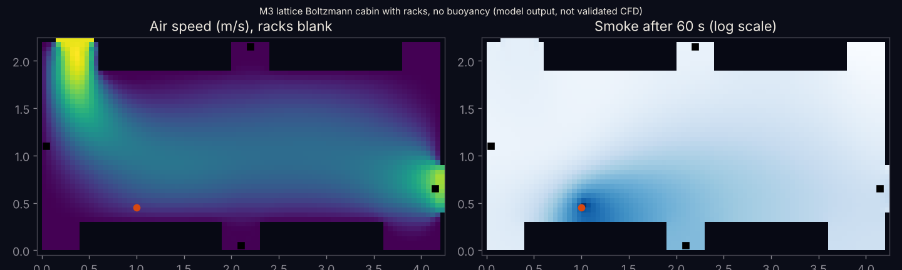

NASA Space Apps 2026 · Flame in Freefall
Detect. Simulate.
Assess.
Camera + depth+Optical smoke sensor→Flame spread simulation→Risk assessment
01
Detect
Two sensors find the fire: a camera that sees the flame in 3D, and an optical sensor that reads the smoke.
02
Simulate
The fire's fuel, size and position go into our microgravity spread model. Change the air and watch it react.




03
Assess
How big, how fast, how soon it is seen: one risk level.